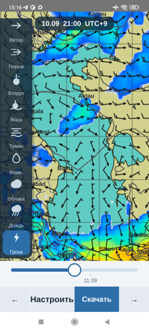
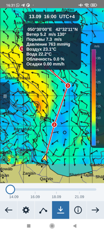

Android 9 и новее · Windows 64 бита · Linux · macOS
Что это такое
GRIB — формат, в котором метеослужбы мира выкладывают расчёты своих
моделей: ветер по часам, волнение, давление, осадки. Данные эти
бесплатны и открыты, платят обычно не за них, а за удобную оболочку.
MAKGrib — такая оболочка, и она бесплатна тоже.
Программа сама скачивает прогноз с серверов американской
метеослужбы NOAA — на тот участок моря, который у вас на
экране, а не на полмира. Файл остаётся в телефоне и открывается при
следующем запуске: в море связи может не быть неделю, и это главное
свойство программы.
XyGrib на телефоне
Судоводители давно пользуются настольной программой
XyGrib (прежде zyGrib) —
под Windows, Linux и macOS. Версии для телефона у неё нет, и на
форумах об этом спрашивают годами.
MAKGrib — форк XyGrib, доведённый до телефона: тот же движок чтения
GRIB и та же карта, но экран сделан заново, под палец и под качку.
Настольные сборки тоже есть — это одна и та же программа.
Не работает XyGrib и не качает прогноз? —
разбор причин и что делать.
Что показывает
Девять слоёв, все из одного скачанного файла — переключаются
мгновенно, докачивать ничего не нужно:
- ветер и порывы — стрелки с оперением и цветное поле скорости;
- волнение — высота, направление и период волны;
- давление — изобары поверх любого слоя;
- температура воздуха и воды;
- туман — разность температуры и точки росы;
- облачность, осадки, гроза (неустойчивость атмосферы).

Маршрут и время прихода
Маршрут прокладывается касаниями по карте, точки двигаются пальцем.
Программа считает длину по дуге большого круга, время в пути по
вашей скорости и час прихода. Судно идёт по маршруту вместе со
сроком прогноза — листаете часы и видите, в какой ветер оно попадёт
и где именно.

Погода в точке
Держите палец на карте — рядом появится окошко с цифрами на
выбранный час: ветер и его направление, порывы, волна, давление в
миллиметрах ртутного столба, температура воздуха и воды,
облачность, осадки.

Где работает
Везде, где есть море: прогноз ветра глобальный. С волнением сложнее,
и об этом честно:
| Море | Ветер, давление, температура | Волнение |
|---|
| Океаны, Средиземное, Северное, Балтика | есть | есть |
| Чёрное, Азовское, Каспий | есть | пока нет |
Модель волнения NOAA не считает замкнутые бассейны — это её
свойство, а не недостаток программы. Волнение для Каспия, Чёрного и
Азовского морей будем брать у немецкой метеослужбы: их модель эти
моря покрывает, проверено.
Чем отличается от Windy и других
Windy прекрасен, пока есть связь. В море её нет. MAKGrib держит
скачанный прогноз в телефоне и показывает его без сети — это и есть
разница между «посмотреть погоду» и «работать с прогнозом».
Остальное: нет подписки, нет учётной записи, нет рекламы, нет сбора
данных. Исходный код открыт — программу нельзя закрыть или начать
продавать через голову тех, кто ею пользуется.
Вопросы
Сколько стоит?
Нисколько. Ни платных функций, ни подписки, ни рекламы.
Нужен ли интернет?
Только чтобы скачать прогноз. Дальше он живёт в телефоне и
открывается сам — хоть через неделю без связи.
Сколько весит скачанный прогноз?
Обычно от двухсот килобайт до мегабайта: зависит от размера участка,
глубины прогноза и шага по времени. На трое суток с шагом три часа
по среднему морю — около полумегабайта.
На каких языках?
На двенадцати: русский, английский, немецкий, французский,
испанский, итальянский, турецкий, азербайджанский, персидский,
туркменский, арабский, китайский. Язык берётся от телефона.
Можно ли доверять ему в навигации?
Нет. Это прогноз погоды, подспорье при планировании перехода, а не
навигационное средство и не замена официальным штормовым
предупреждениям.
Скачать
Для телефона выбирайте arm64-v8a — подходит почти всем
аппаратам с 2019 года; armeabi-v7a — для старых
32-битных.